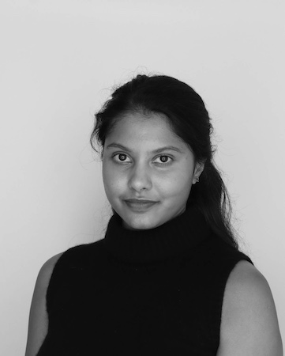

I am a Ph.D. student in Computer Science at the University of California, Berkeley, where I am fortunate to be co-advised by Umesh Vazirani and John Wright. I am drawn to foundational questions about physics and computation, and I enjoy connecting the insights I gain from these questions to real-world applications.
I primarily study shallow quantum circuits (QAC0). These circuits are particularly relevant in the current NISQ era, where quantum devices have limited nonlocality. The question that keeps me up at night is whether QAC0 can implement the FANOUT operation (Parity ∈ QAC0?). The answer determines the power of QAC0 relative to classical circuits, from AC0 to TC0, as well as the feasibility of inherently quantum tasks such as the Quantum Fourier Transform and Dicke State preparations.
Before starting my Ph.D. at Berkeley, I completed my Master's at Massachusetts Institute of Technology (MIT), where I was advised by Aram Harrow.
Thesis:
Pretending to be Quantum: A Study of IQP-Based Tests of Quantumness.
Outside of research, I enjoy windsurfing at the Berkeley Marina and learning to play the drums.
Selected Publications
-
Parity ∉ QAC0 ⟺ QAC0 is Fourier-Concentrated
Lucas Gretta, Meghal Gupta, and Malvika Raj Joshi.
Best Student PaperarXivBibTeX
@misc{gretta2026paritynotinqac0iff, title={Parity $\notin$ QAC0 $\iff$ QAC0 is Fourier-Concentrated}, author={Lucas Gretta and Meghal Gupta and Malvika Raj Joshi}, year={2026}, eprint={2604.02793}, archivePrefix={arXiv}, primaryClass={quant-ph}, url={https://arxiv.org/abs/2604.02793}, } -
Shor's Algorithm Requires Fanout
Lucas Gretta and Malvika Raj Joshi.
arXivBibTeX
@misc{gretta2026shorsalgorithmrequiresfanout, title={Shor's Algorithm Requires Fanout}, author={Lucas Gretta and Malvika Raj Joshi}, year={2026}, eprint={2608.06703}, archivePrefix={arXiv}, primaryClass={quant-ph}, url={https://arxiv.org/abs/2608.06703}, } -
Polylogarithmic-Weight Dicke States in QAC0 and Arbitrary Symmetric States in QAC0f
Lucas Gretta, Meghal Gupta, and Malvika Raj Joshi.
arXivBibTeX
@misc{gretta2026polylogarithmicweightdickestates, title={Polylogarithmic-Weight Dicke States in QAC$^0$ and Arbitrary Symmetric States in QAC$^0_f$}, author={Lucas Gretta and Meghal Gupta and Malvika Raj Joshi}, year={2026}, eprint={2604.15298}, archivePrefix={arXiv}, primaryClass={quant-ph}, url={https://arxiv.org/abs/2604.15298}, } -
Improved Lower Bounds for QAC0
Malvika Raj Joshi, Avishay Tal, Francisca Vasconcelos, and John Wright.
Proceedings arXiv SlidesBibTeX
@inproceedings{joshi2026improvedlowerboundsqac0, author = {Joshi, Malvika Raj and Tal, Avishay and Vasconcelos, Francisca and Wright, John}, title = {Improved Lower Bounds for QAC0}, year = {2026}, isbn = {9798400725364}, publisher = {Association for Computing Machinery}, address = {New York, NY, USA}, url = {https://doi.org/10.1145/3798129.3800922}, doi = {10.1145/3798129.3800922}, booktitle = {Proceedings of the 58th Annual ACM Symposium on Theory of Computing}, pages = {2199–2209}, numpages = {11}, keywords = {QAC0, analysis of Boolean functions, quantum circuit complexity}, location = {Salt Lake City, UT, USA}, series = {STOC '26} }
Selected Industry Experience
-
Applied Scientist Intern, Amazon
Designed Lexicure, a leakage-free encrypted lexical search protocol with improved communication tradeoffs and new secure primitives for higher-degree arithmetic.
With Tal Wagner, Shai Halevi and Nina Mishra.ePrintBibTeX
@misc{cryptoeprint:2026/2182, author = {Malvika Raj Joshi and Tal Wagner and Shai Halevi and Nina Mishra}, title = {Lexicure: Efficient, Encrypted Lexical Search}, howpublished = {Cryptology {ePrint} Archive, Paper 2026/2182}, year = {2026}, url = {https://eprint.iacr.org/2026/2182} } -
Applied Scientist Intern, Amazon
Differentially-Private Diffusion with improved utility.
With Shiva Kasiviswanathan, Tal Wagner and Nina Mishra. -
Open Source Software Development Intern, PyTorch
Designed and implemented a C++ API for PyTorch Autograd, introducing native C++ support for automatic differentiation.
PyTorch contributions
For additional research, software engineering, outreach, and teaching experience, see my CV.